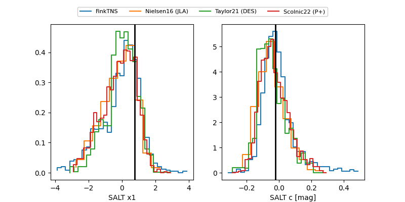

FINK: ZTF25aborakj
Lasair: ZTF25aborakj
ALeRCE: ZTF25aborakj
TNS: 2025xcc
YSE: 2025xcc
ZTF25aborakj (ztf,fink)
2025xcc (tns,yse)
equatorial (ra, dec) = (343.2210,+80.48452)
galactic (l, b) = (117.9785,+18.77376)

last ztfg=19.84, ztfr=19.65
4 ztfg, 6 ztfr detections